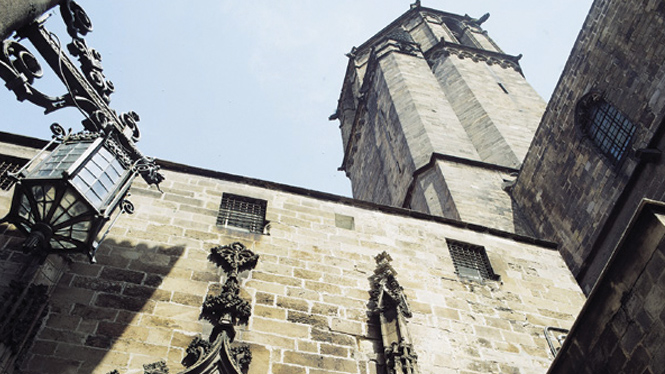

Barcelona is located in the northeastern part of the Mediterranean coast of the Iberian Peninsula. It is the second largest city in Spain in both size and population: more than 4million for the Barcelona metropolitan area. It is also the capital of Catalonia, one of the Spain autonomous regions. There are two official languages spoken in Barcelona: Catalan, generally spoken in all of Catalonia, and Castillian Spanish.
Barcelona will be always associated the powerful and splendid Modernisme architecture (Catalan Art Nouveau) of Antoni Gaudi. But Barcelona is also the city of Picasso and Miro. It’s also a home for gorgeous beaches, serene parks and gardens, uniquely preserved medieval historic quarter Barri Gotic, fine museums and elegant restaurants with gastronomical delights.
Your trip to Barcelona will most likely be a journey of discovery. Barcelona and the rest of Catalonia are very different from the rest of Spain. For centuries, the Catalans were fighting for their cultural identity. Here is your chance to learn something new about the Catalan language, people, history and traditions you may have known very little about.
It is well worth buying a good guide book to Barcelona. If you own an iPod or MP3 player, then audio Guides can take you through Barcelona on guided walks, good for students & exchange students.
